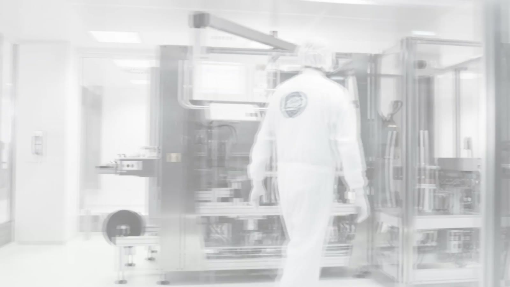
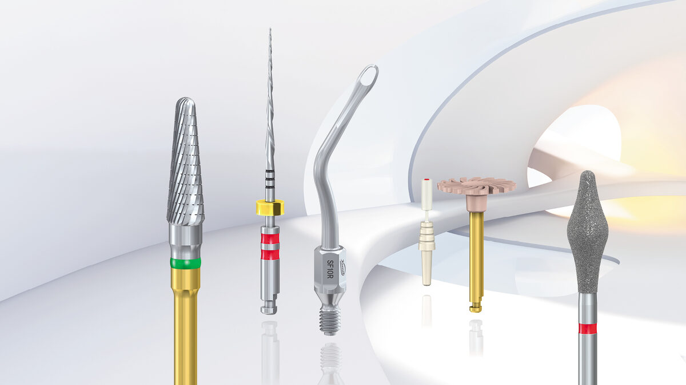
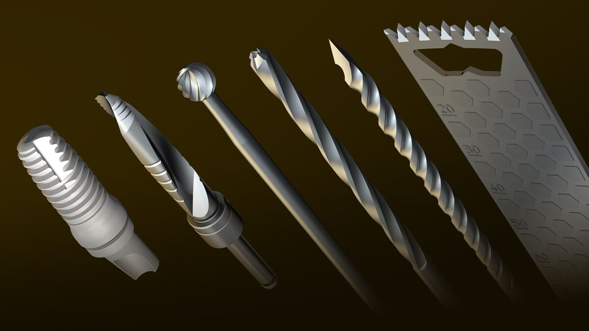

Our business areas
Brasseler moves with the times, and flexibility is important. Because of this, we have formed a total of three business areas over the course of our company history. All of these serve our target audiences with outstanding quality.
Komet Dental.
Komet Dental is where our success story started, and is traditionally considered the core of our family company. The Brasseler brothers developed the brand Komet Dental in 1923. This was also where our direct distribution model was born. Since that time, personal contact with customers has been key to our success, eliminating the need for dealers.
Brasseler distributes the world’s largest portfolio of rotating dental instruments and systems under the Komet Dental brand, including instruments for dentists, dental technicians, oral surgeons and orthopedists.
Our extensive product range includes sophisticated standard instruments and innovative solutions that set standards throughout the industry.
In addition to classic round burrs, for example, our broad product portfolio includes crown cutters, composite removers and polishers. These are supplemented by many other products, such as root canal filing systems for endodontic treatment.

Komet Medical.
Under the Komet Medical brand, Gebr. Brasseler operates on the market as a leading contract development and manufacturing organization (CDMO) for surgical instruments and dental implantology.
Komet Medical supports medical device companies worldwide in the areas of orthopaedics and traumatology, ENT and neurosurgery as well as dental implantology, starting from project planning, design and development to complete manufacturing and sterile packaging of their instruments and beyond.
The business unit also has an extensive catalogue portfolio of surgical small and large bone saw blades, bone pins for the fixation of cutting blocks and arrays (RAS), minimally invasive cutters, twist drills, steel, carbide, and diamond burs.

Komet Jewellery.
Our many years of experience in manufacturing rotating instruments, and our knowledge of many different materials, are also relevant in the fine jewellery manufacturing field. We founded the Komet Jewellery business area in 2001, which has continued to grow and develop successfully since that time.